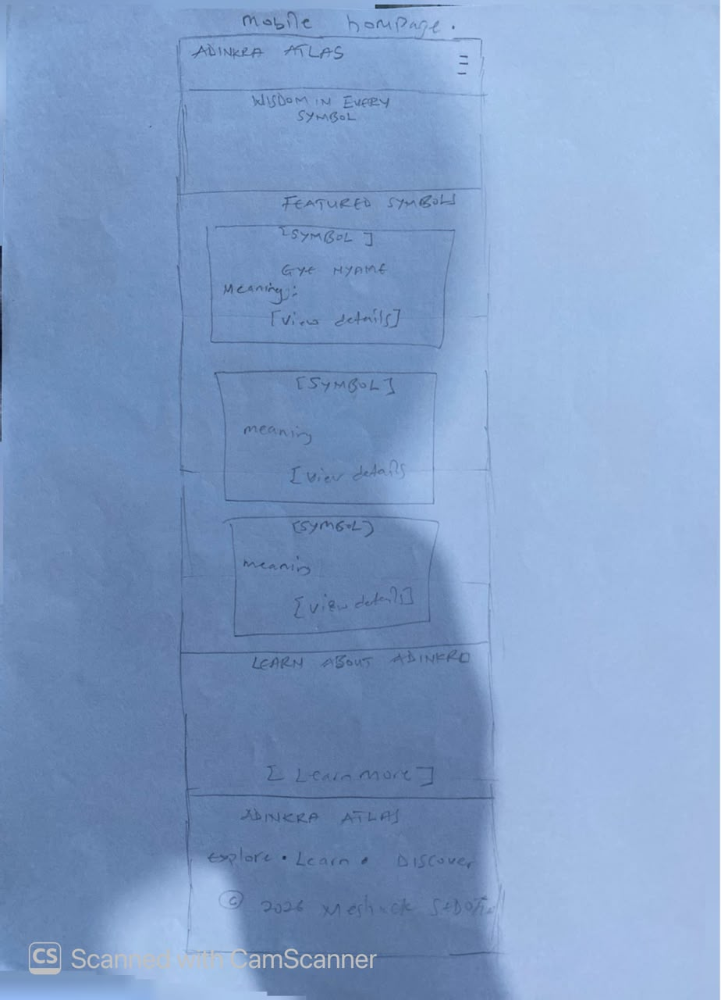
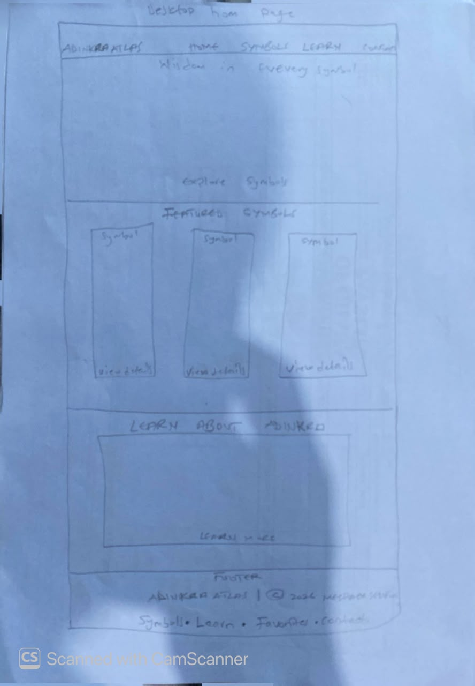

Site Name
Adinkra Atlas
An atlas is a collection that helps people find their way. This name shows that the site is a guide to Adinkra symbols from Ghana and the ideas they carry.
Optional domain availability: adinkra-atlas.org
Site Purpose
Adinkra Atlas is a hub for learning about Ghanaian Adinkra symbols. The site will provide:
- A searchable gallery of at least 15 symbols, each showing its name, meaning, proverb, and category.
- A detail window for each symbol, plus a way to save favorites on the visitor's device.
- A learn page covering the history and cultural use of Adinkra.
- A contact form for questions and symbol suggestions.
Scenarios
- What does the Gye Nyame symbol mean, and where is it used?
- Which Adinkra symbols represent unity or strength, so I can choose one for a gift or design?
- How can I save the symbols I like and find them again later?
- Where did Adinkra come from, and how are the cloths made?
Color Scheme
| Color | Hex | Where it is used |
|---|---|---|
| Cream | #FFF8EC | Page background and text on dark areas |
| Dark brown | #2B1B10 | Paragraph text, header and footer backgrounds |
| Terracotta | #7A2E0E | Headings, links, and borders |
| Gold | #E0A526 | Accents, buttons, and highlights, always with dark brown text |
Contrast notes: dark brown on cream, terracotta on cream, and dark brown on gold are all expected to pass WCAG AA. Final ratios will be confirmed with the WebAIM Contrast Checker.
Typography
- Playfair Display (bold): all headings (h1 to h3) and the site name, for a cultured, heritage feel.
- Source Sans 3 (regular and semi-bold): body text, navigation, forms, and buttons, for easy reading on small screens.
Heading sample: Wisdom in every symbol
Body sample: Adinkra symbols express proverbs and values in a single image.
Wireframe
Home page wireframes (hand-drawn, black and white). Both show the header with logo and navigation, a hero area, featured symbols, and the footer.

